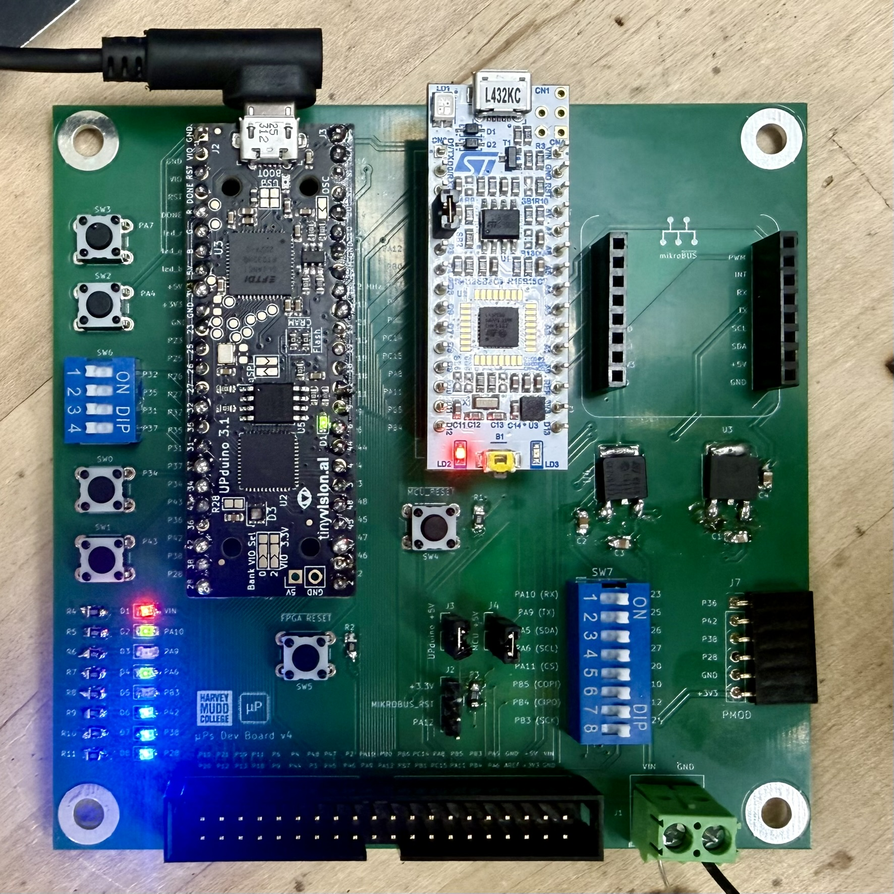
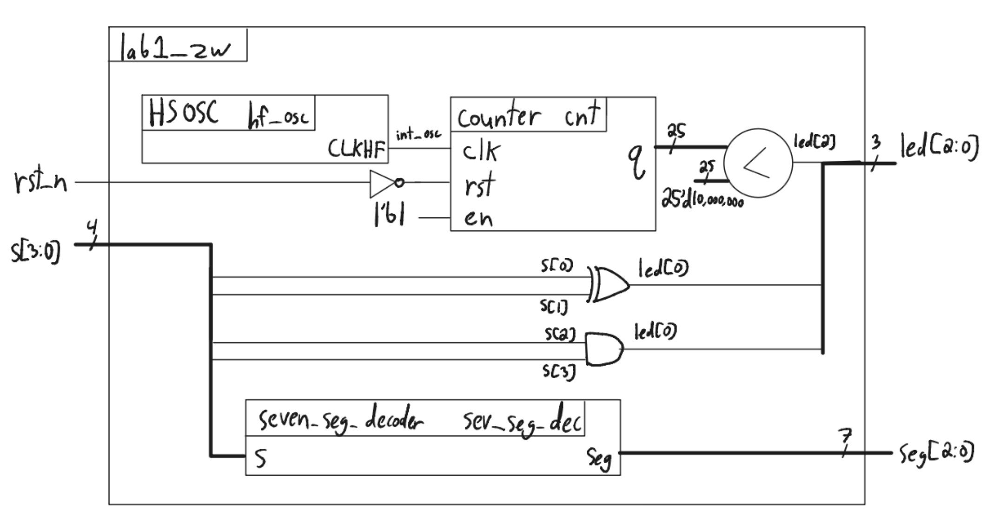
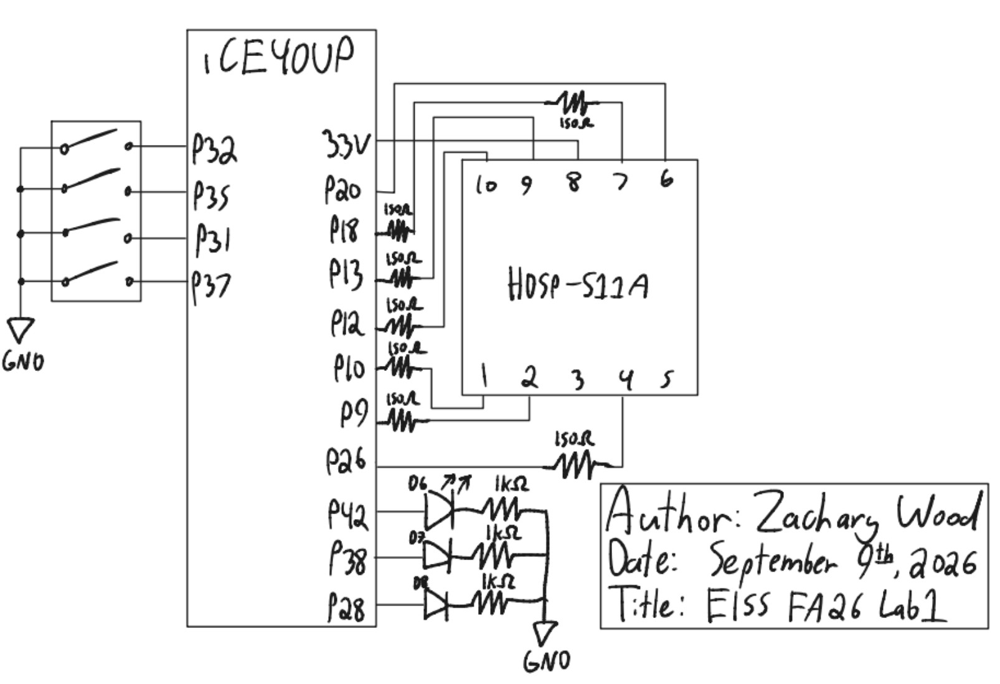
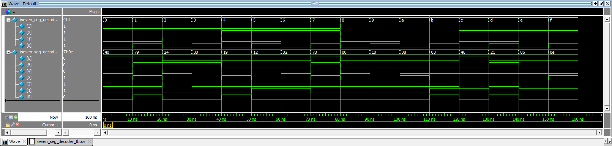
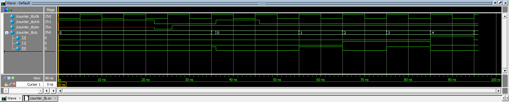
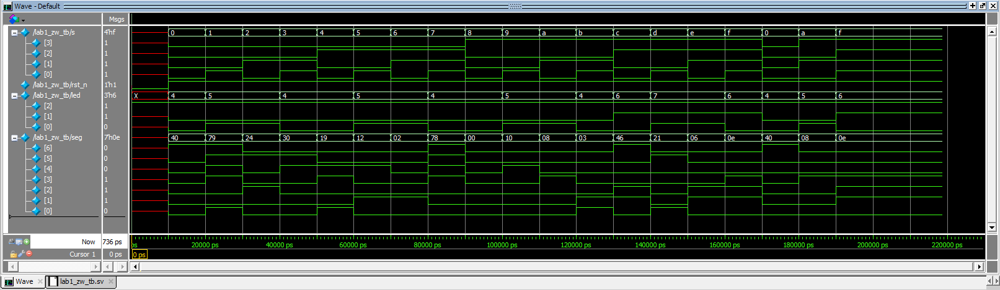

Lab 1: FPGA and MCU Setup and Testing
Introduction
The goal of this lab was to become familiarized with the microcontroller unit (MCU) and field-programmable gate array (FPGA) used this semester. I assembled a development board containing a Nucleo-L432KC MCU and an UPduino v3.1 Lattice iCE40UP5K FPGA development board, wrote and verified SystemVerilog modules to control three on-board LEDs and an external 7-segment display using four on-board DIP switches, and programmed the FPGA with my synethsised design.
Design and Testing Methodology
Development Board Assembly
The development board contains several components, including pins which can be directly routed from the MCU to the FPGA, extension headers for the mikroBUS and 6-pin PMOD standard, user configurable LEDs, pushbuttons, slider switches, and a header to route pins via a ribbon cable to a separate breadboard adapter PCB which can be inserted into a solderless breadboard.

FPGA Implementation
The top-level module had the following inputs and outputs:
| Signal Name | Signal Type | Description |
|---|---|---|
rst_n |
input | active-low reset button (internal pull-up), used to reset the blink counter during simulation |
s[3:0] |
input | the four DIP switches (on-board, SW6) |
led[2:0] |
output | 3 LEDs (on-board, D6-D8) |
seg[6:0] |
output | the segments of a common-anode 7-segment display, used to display the hexadecimal digit of s[3:0] |
There is no clock signal in the inputs because the 48 MHz clock is generated inside the FPGA by the HSOSC (High-Speed OSCillator) primitive.
led[0] is s[1] ^ s[0], led[1] is s[2] & s[3], and led[2] blinks at 2.4 Hz. I chose to divide the clock with a counter with a settable max and then used comparison to achieve a 2.4 Hz square wave.
seg[6:0] was generated by a 7-segment decoder submodule containing a unique case block. To differentiate 0/D and 8/B, I made ‘d’ and ‘b’ lowercase.
Technical Documentation
The source code for the project can be found in the associated Github repository.
Block Diagram
Figure 1 shows the block diagram of the design. The top-level module lab1_zw includes three submodules: the high-speed oscillator (hf_osc, an HSOSC primitive), a counter (cnt) used as divide the clock, and a seven-segment decoder (sev_seg_dec). rst_n is inverted before driving the counter’s active-high rst port, and the counter’s en is tied high so it runs continuously. The counter’s 25-bit output q is compared against 25'd10,000,000 to produce an approximately 50% duty 2.4 Hz square wave on led[2]. led[0] and led[1] are generated directly from s[3:0] with an XOR and AND gate respectively, and s[3:0] is also passed to the decoder to produce seg[6:0].

lab1_zw SystemVerilog design.Schematic
Figure 2 shows the schematic of the physical circuit. The four DIP switches (s[3:0]) are wired to FPGA pins P32, P35, P31, and P37, with the other terminal of each switch tied to GND. The FPGA’s internal pull-up resistors on these pins provide the high level when a switch is open. The seven-segment display is an HDSP-511A (deep red, common anode). Its common anode is tied directly to 3.3V, and each of its 7 segment cathodes is driven from an FPGA pin through its own 150 Ω current-limiting resistor, so every segment draws the same current regardless of how many segments are lit at once. The three on-board LEDs (D6, D7, D8) are each driven through their own 1 kΩ series resistor to GND.

Calculations
Segment current. Per the HDSP-511A datasheet, each segment has a typical forward voltage \(V_{ON} = 2.00\text{ V}\) at \(I_F = 20\text{ mA}\), with an absolute maximum continuous forward current of 20 mA per segment. With the display’s common anode at \(V_{DD} = 3.3\text{ V}\) and a 150 Ω series resistor per segment:
\[I_F = \frac{V_{DD} - V_{ON}}{R} = \frac{3.3\text{ V} - 2.00\text{ V}}{150\ \Omega} \approx 8.7\text{ mA}\]
This falls within the lab’s recommended 5-10 mA range and well under the segment’s 20 mA absolute maximum rating.
Blink frequency. The HSOSC primitive generates a nominal 48 MHz clock. The counter divides this down with MAX = 25'd19_999_999, wrapping every 20,000,000 cycles:
\[f_{wrap} = \frac{48\times10^6\text{ Hz}}{20\times10^6} = 2.4\text{ Hz}\]
led[2] is asserted whenever cnt_q < 25'd10_000_000, which is exactly the first half of each 20,000,000-cycle period, giving a 50% duty 2.4 Hz square wave. The counter needs at least \(\lceil \log_2(20{,}000{,}000) \rceil = 25\) bits to represent MAX, matching the N = 25 parameter used in the instantiation. This could have been lowered by generating a 6 MHz clock instead of a 48 MHz clock with the HSOSC primitive, per the iCE40 Oscillator Usage Guide.
Results and Discussion
This design met the prescribed proficiency and excellence requirements in simulation. In QuestaSim, the seven-segment decoder was verified against all 16 possible input combinations, the counter’s reset, enable, and max-count behaviors were each verified with targeted, self-checking assertions, and the top-level testbench confirmed correct switch-to-LED and switch-to-segment wiring as well as a functioning HSOSC clock. led[0] correctly implements s[0] ^ s[1], led[1] correctly implements s[2] & s[3], and led[2] blinks at exactly 2.4 Hz with a 50% duty cycle. All 16 hexadecimal digits display correctly and distinguishably, including visually similar pairs like 6/b and 0/D.
Testbench Simulation
Figure 3 and Figure 4 show the seven-segment decoder and counter testbenches, respectively. Figure 5 shows the top-level testbench verifying all switch values.

seven_seg_decoder_tb, iterating s through all 16 values and verifying the decoded seg output.
counter_tb, showing reset, enable, and counting behavior.
lab1_zw_tb, showing led and seg responding correctly across all values of s.Conclusion
The dev board was assembled properly and the FPGA design successfully drove LEDs based on combinational logic, blinked an external LED using the on-board high-speed oscillator at 2.4 Hz, and controlled a seven segment display.
I spent roughly 19 hours on this project.
For instructor reference: I spent 3 hours on Quarto set up and an initial reading of the lab materials, 6 hours on board PCB assembly and hardware debugging, 3 hours writing SystemVerilog modules and testbenches, 4 hours debugging the software toolchain used on the FPGA (Lattice Radiant issues with licensing and programming/flashing, setting up OpenFPGA), 1 hour on the AI prototype, and then 2 hours writing up the lab report.
AI Prototype Summary
The purpose of the AI Prototype is to experiment with utilizing AI as a coding assistant, and analyze the quality, speed, and precision that an LLM can generate code. The prompt for this week is shown below:
Prompt: “Write SystemVerilog HDL to leverage the internal high speed oscillator in the Lattice UP5K FPGA and blink an LED at 2 Hz. Take full advantage of SystemVerilog syntax, for example, using logic instead of wire and reg.”
//------------------------------------------------------------------------
// led_blink_2hz.sv
//
// Blinks an LED at BLINK_FREQ_HZ using the UP5K internal high-frequency
// oscillator (SB_HFOSC) as the sole clock source. No external clock or
// reset input is required; on an SRAM-based iCE40 device, all flip-flops
// power up to the state defined at synthesis (0 by default), so `count`
// and `led` both start at 0 without an explicit reset path.
//------------------------------------------------------------------------
module led_blink_2hz #(
// CLK_FREQ_HZ must match the CLKHF_DIV setting on the SB_HFOSC
// instance below:
// "0b00" = 48 MHz (default) "0b01" = 24 MHz
// "0b10" = 12 MHz "0b11" = 6 MHz
parameter int CLK_FREQ_HZ = 12_000_000,
parameter int BLINK_FREQ_HZ = 2
) (
output logic led
);
//----------------------------------------------------------------------
// Internal high-frequency oscillator
//----------------------------------------------------------------------
logic clk;
SB_HFOSC #(
.CLKHF_DIV("0b10")
) u_hfosc (
.CLKHFPU(1'b1),
.CLKHFEN(1'b1),
.CLKHF (clk)
);
//----------------------------------------------------------------------
// Toggle counter: one toggle every quarter blink period
//----------------------------------------------------------------------
localparam int TOGGLE_COUNT = CLK_FREQ_HZ / (BLINK_FREQ_HZ * 2);
localparam int CNT_WIDTH = $clog2(TOGGLE_COUNT);
logic [CNT_WIDTH-1:0] count;
always_ff @(posedge clk) begin
if (count == TOGGLE_COUNT - 1) begin
count <= '0;
led <= ~led;
end else begin
count <= count + 1'b1;
end
end
endmoduleThis first version failed to synthesize in Lattice Radiant:
35901063 Error ../../led_blink_2hz.sv(36): instantiating unknown module SB_HFOSC. VERI-1063 [led_blink_2hz.sv:36]I gave Claude the error with no other context and it provided a reasonable explanation for the issue: SB_HFOSC is the name used by the older iCEcube2 and the open-source Yosys/nextpnr toolchains, while Lattice Radiant only recognizes the oscillator under the name HSOSC. It also suggested that if the CLKHF_DIV string literal "0b10" were ever rejected, the vector form 2'b10 was worth trying instead, since Lattice’s own examples use both notations inconsistently. It then returned a corrected version with the primitive renamed and a comment explaining the change.
//------------------------------------------------------------------------
// led_blink_2hz.sv
//
// Blinks an LED at BLINK_FREQ_HZ using the UP5K internal high-frequency
// oscillator (SB_HFOSC) as the sole clock source. No external clock or
// reset input is required; on an SRAM-based iCE40 device, all flip-flops
// power up to the state defined at synthesis (0 by default), so `count`
// and `led` both start at 0 without an explicit reset path.
//------------------------------------------------------------------------
module led_blink_2hz #(
// CLK_FREQ_HZ must match the CLKHF_DIV setting on the SB_HFOSC
// instance below:
// "0b00" = 48 MHz (default) "0b01" = 24 MHz
// "0b10" = 12 MHz "0b11" = 6 MHz
parameter int CLK_FREQ_HZ = 12_000_000,
parameter int BLINK_FREQ_HZ = 2
) (
output logic led
);
//----------------------------------------------------------------------
// Internal high-frequency oscillator
//----------------------------------------------------------------------
logic clk;
// Lattice Radiant names this primitive HSOSC; the older iCEcube2
// toolchain and the open-source Yosys/nextpnr flow use SB_HFOSC
// instead. Port names (CLKHFPU, CLKHFEN, CLKHF) are identical
// between the two.
HSOSC #(
.CLKHF_DIV("0b10")
) u_hfosc (
.CLKHFPU(1'b1),
.CLKHFEN(1'b1),
.CLKHF (clk)
);
//----------------------------------------------------------------------
// Toggle counter: one toggle every quarter blink period
//----------------------------------------------------------------------
localparam int TOGGLE_COUNT = CLK_FREQ_HZ / (BLINK_FREQ_HZ * 2);
localparam int CNT_WIDTH = $clog2(TOGGLE_COUNT);
logic [CNT_WIDTH-1:0] count;
always_ff @(posedge clk) begin
if (count == TOGGLE_COUNT - 1) begin
count <= '0;
led <= ~led;
end else begin
count <= count + 1'b1;
end
end
endmoduleReflection: The corrected code synthesized successfully in Lattice Radiant on the second attempt. In terms of quality, the output seems clean and idiomatic: it used logic, parameterized the clock frequency and blink frequency, derived the counter width with $clog2, and used underscore-separated numeric literals for readability. However, for my preferences, I find the amount of comments excessive.
The mistake Claude made was assuming the open-source Yosys/nextpnr primitive name (SB_HFOSC) would be used instead of Lattice Radiant’s (HSOSC). Ideally, Claude would predict that issue in advance and ask which toolchain was in use before generating any code. However, I also could have provided the information about the toolchain myself, and I would normally do so if I were to ask an LLM to generate code like this.